15/10/2022 — Xoáy trước tim — 20 ca xoáy hoặc hình ảnh giống xoáy
Bản dịch tiếng Việt của bài "Precordial Swirl — 20 cases of Swirl or Look-Alikes" – Dr. Smith’s ECG Blog. Giữ nguyên toàn bộ 24 hình ảnh của bản gốc.
Pendell (dĩ nhiên là Pendell Meyers), với một chút giúp sức của Smith, đã đặt tên cho một hình ảnh tắc LAD mới là “xoáy trước tim (Precordial Swirl)”, trong đó vectơ ST chênh lên hướng sang phải, với ST chênh lên ở V1 và aVR, kèm ST chênh xuống soi gương ở V5 và V6. Hình ảnh này là do thiếu máu cục bộ xuyên thành không chỉ ở thành trước và mỏm, mà còn do thiếu máu cục bộ xuyên thành ở vách liên thất, thường do tắc ở đoạn gần, trước nhánh xuyên vách đầu tiên.
Đây là phần giải thích bằng hình ảnh cho thuật ngữ mà chúng tôi đặt ra, vì hình ảnh tắc LAD này gây dịch chuyển STT hướng lên ở V1-2 và dịch chuyển STT hướng xuống ở V5-V6:

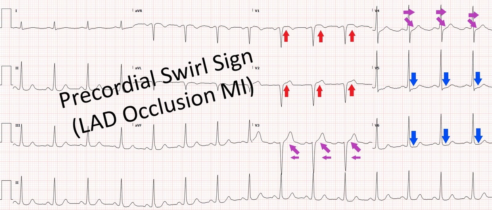
Rất dễ nhầm hình ảnh này với LVH (hoặc ngược lại), vì LVH thường có ST chênh lên ở V1-V3 và ST chênh xuống ở V5, 6. LBBB cũng có ST chênh lên ngược hướng ở V1-V3 và ST chênh xuống ở V5, 6 — tôi sẽ không đưa ví dụ về điều này, vì chúng có sẵn khắp nơi trên blog.
Như mọi khi, OMI do tắc LAD không cần đáp ứng tiêu chuẩn STEMI và thường là KHÔNG đáp ứng!
Hãy nhớ: khi có ST chênh lên ở V2-V4 và bạn đang băn khoăn liệu đây có thể là ST chênh lên BÌNH THƯỜNG hay không, thì nó KHÔNG BAO GIỜ bình thường nếu có bất kỳ ST chênh xuống nào ở bất kỳ chuyển đạo trước tim nào, hoặc ở bất kỳ chuyển đạo chi nào ngoài aVL. Đây là lý do ST chênh xuống là một trong các tiêu chí loại trừ khi dùng LAD Occlusion/Normal Variant Formula (công thức phân biệt tắc LAD với ST chênh lên biến thể bình thường).
= = =
Dưới đây là nhiều ví dụ mà chúng tôi đã đăng:
- 5 ca LVH giống xoáy trước tim
- 1 ca (Ca 6) LVH giống xoáy trước tim, nhưng thực ra là LVH + OMI thành sau
- 14 ca (Ca 7-20) OMI có xoáy trước tim
= = =
Trước tiên, 5 ca giả dạng:
Ca 1. Bệnh nhân 50 mấy tuổi đau ngực do cocaine, có ST chênh lên ở V1 – V3

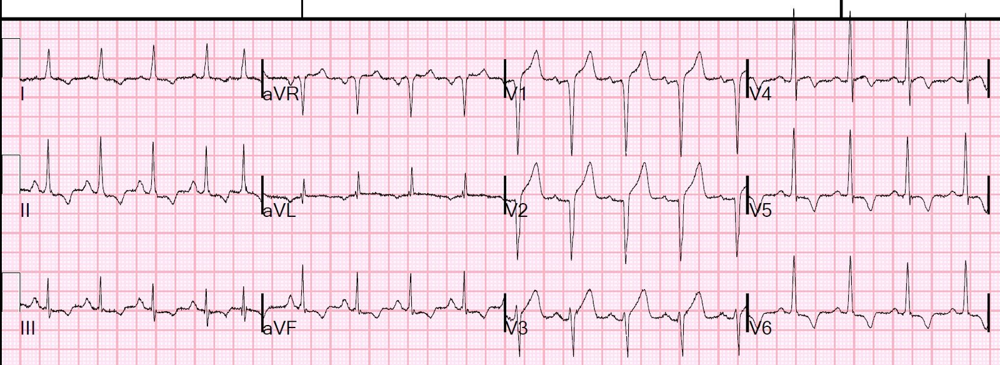
Ca này rất khó. Điện thế cao nhưng không quá lớn. Hãy đọc ca bệnh.
Ca 2. Bệnh nhân 60 mấy tuổi bị ngất, LVH và ST chênh lên dạng lồi

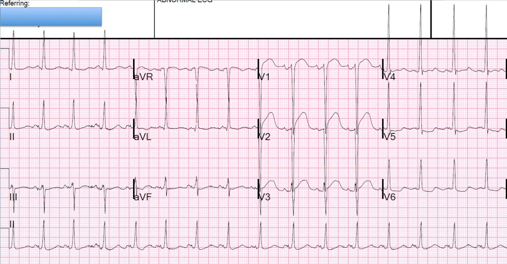
Điện thế rất lớn.
= = =
Các ca sau đây lấy từ bài này:
Ca 3. Đây có phải thiếu máu cục bộ cấp không? Thêm về LVH.

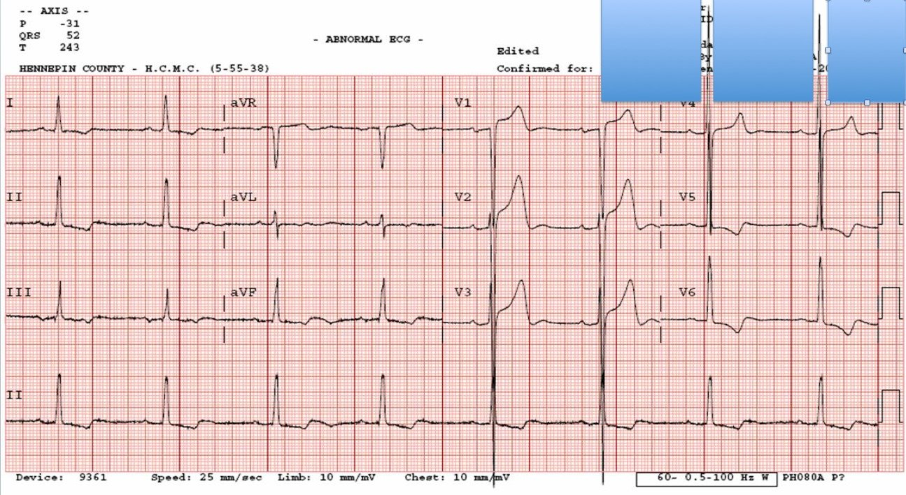
Đây chỉ là LVH, không phải OMI. Điều này rõ ràng nhờ điện thế rất lớn.
= = =
Ca 4.

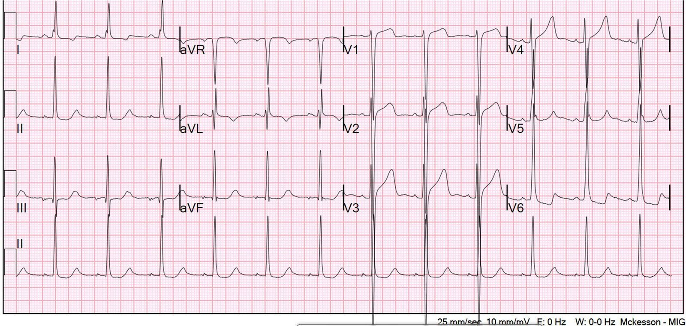
Đây chỉ là LVH, không phải OMI. Lại là điện thế rất lớn.
= = =
Ca 5.

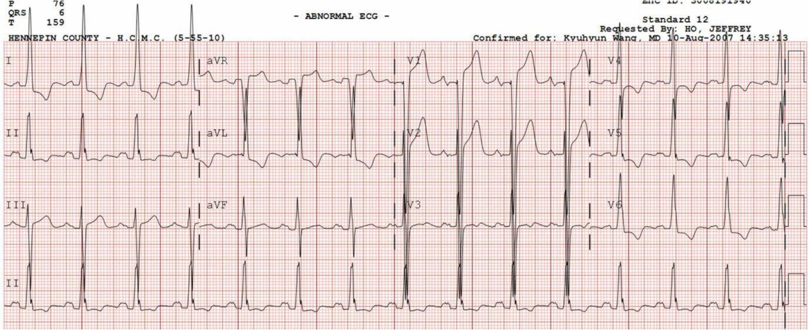
Lại là điện thế rất lớn. Chỉ là LVH.
= = =
Ca 6.
Đây là một ca có OMI thành sau nhưng trông giống xoáy do có LVH đi kèm:

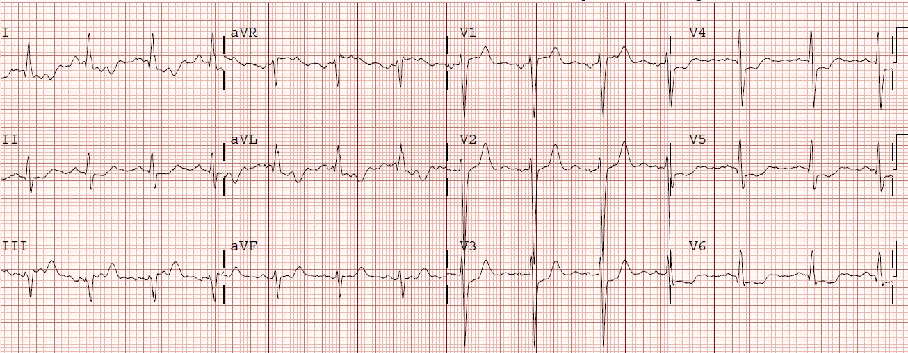
= = =
Dưới đây là nhiều bài khác về xoáy (KHÔNG phải LVH! ).
Ca 7. STEMI vách với ST chênh lên ở V1 và V4R, và ST chênh xuống soi gương ở V5, V6

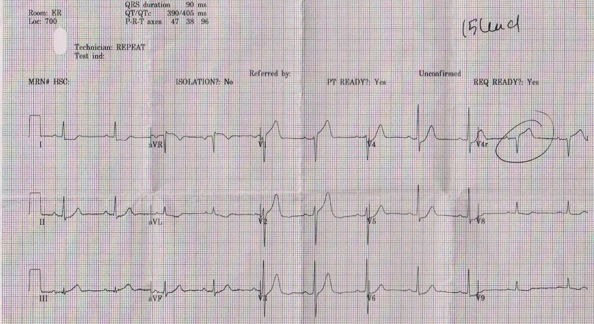
= = =
Ca 8.
Tắc LAD bị bỏ sót, có xoáy, troponin đỉnh 80 ng/mL (tương đương 80.000 ng/L), được chẩn đoán là “Non-STEMI”.

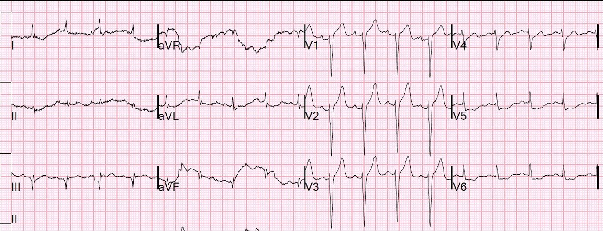
= = =
Ca 9. Nam giới 50 mấy tuổi bị “đau do đầy hơi”

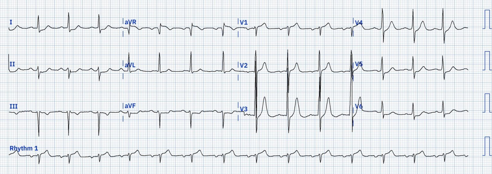
Ghi chú thêm: điện tâm đồ này giống điện tâm đồ bên dưới, nhưng đã được cải thiện bằng ứng dụng Powerful Medical, có thể số hóa và cải thiện bất kỳ điện tâm đồ nào!

= = =
Ca 10. Nam giới 60 mấy tuổi bị ngừng tim với nhịp sốc được, sau đó tái lập tuần hoàn tự nhiên (ROSC), và không có STEMI – bạn sẽ làm gì?

= = =
Ca 11. Phụ nữ 35 tuổi tắc LAD chỉ biểu hiện bằng sóng T tối cấp và ST chênh xuống ở thành dưới, cũng bị máy tính bỏ sót

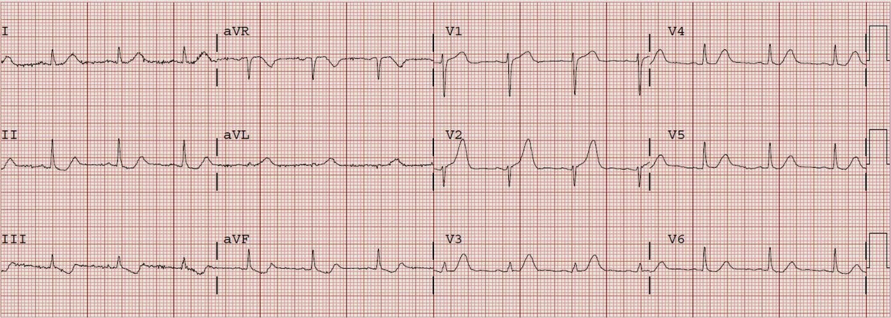
= = =
Ca 12. Nam giới 49 tuổi đau ngực. Có phải OMI không? Có phải giả bình thường hóa không?

= = =
Ca 13. Đau ngực dữ dội như bị đè ép, nhưng điện tâm đồ không rõ ràng; về sau có cả RBBB và LBBB

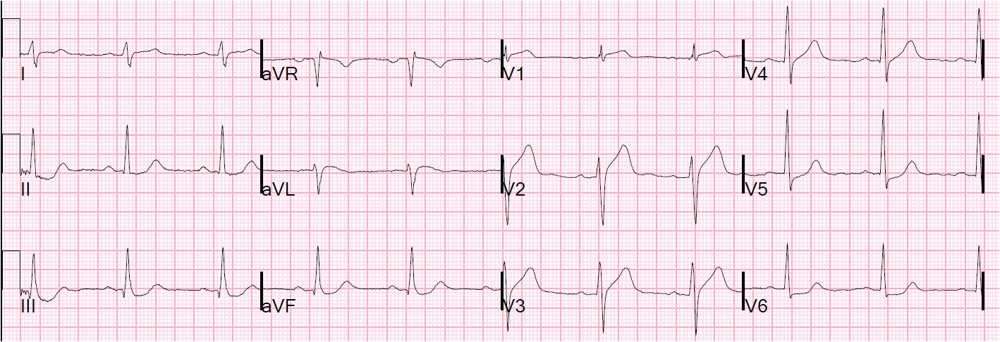
= = =
Ca 14. STEMI thành trước rất kín đáo, dòng chảy TIMI II kèm huyết khối

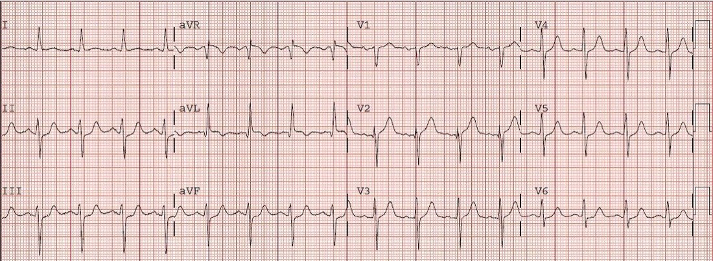
= = =
Ca 15. Bạn sẽ làm gì với bệnh nhân được chuyển đến bạn này, hiện đã hết triệu chứng?

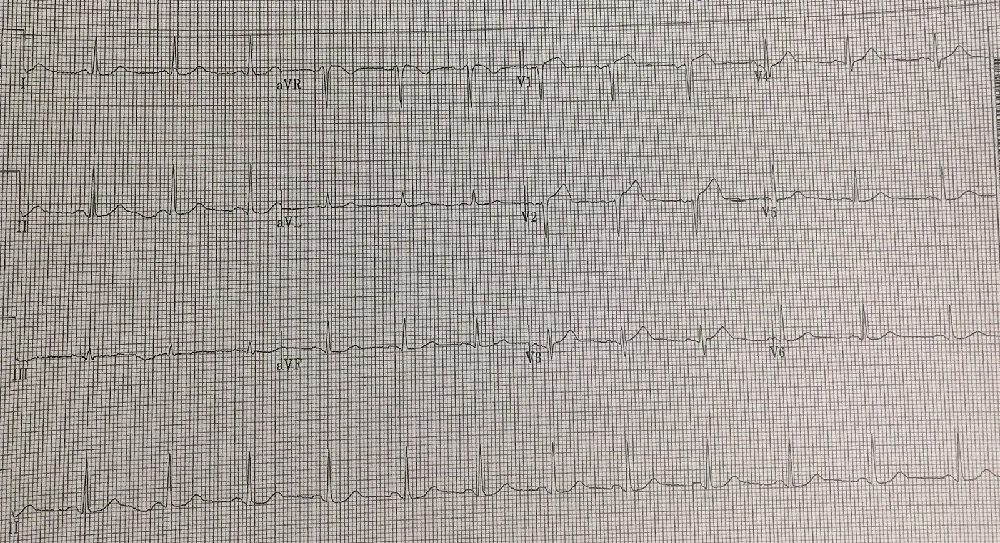
= = =
Ca 16. Bạn muốn chờ bao lâu để OMI của mình biểu hiện thành STEMI? Đôi khi các điện tâm đồ liên tiếp giúp giảm thiểu sự chậm trễ.

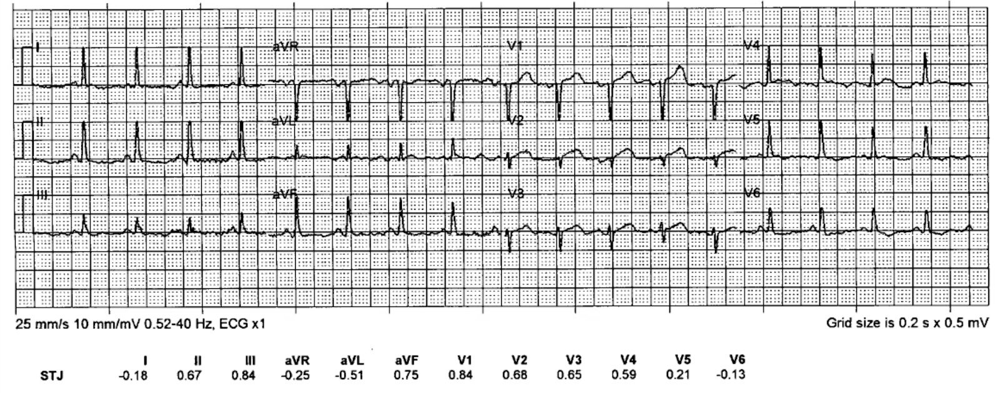
= = =
Ca 17. Nam giới sáu mươi mấy tuổi đau ngực lúc nửa đêm, troponin không phát hiện được

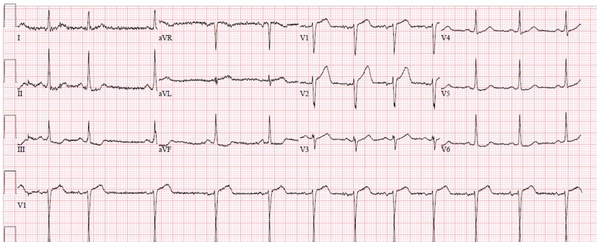
= = =
Ca 18. Nam giới 40 tuổi đau ngực từ đêm qua

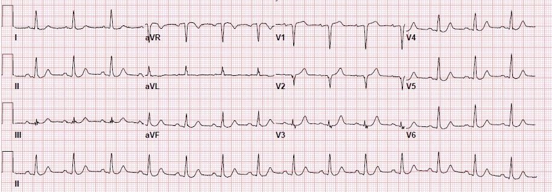
= = =
Ca 19. Nam giới sáu mươi mấy tuổi đau ngực, thở nhanh và tăng huyết áp

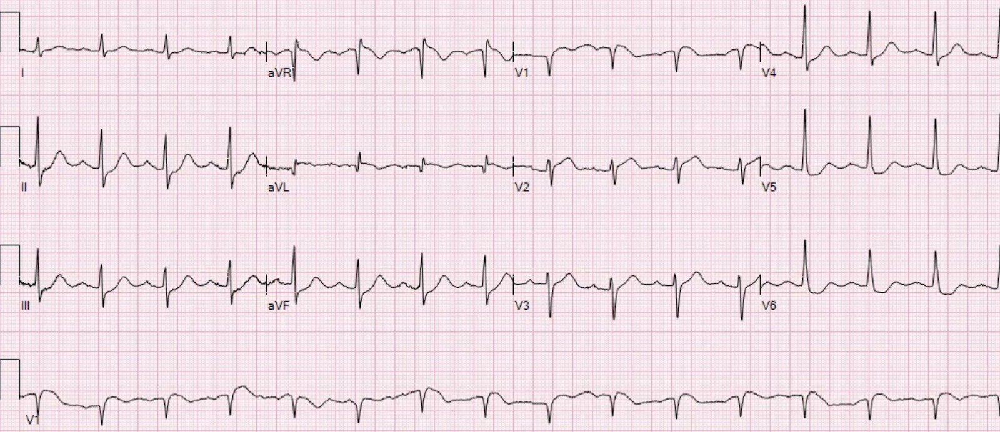
= = =
Ca 20. Đau ngực và RBBB. Bạn nghĩ sao?

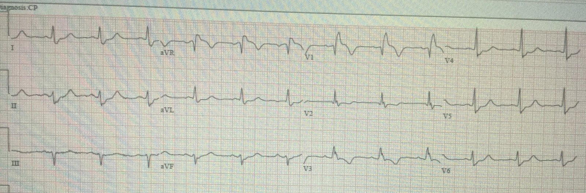
= = =
==================================
BÌNH LUẬN CỦA TÔI, bởi KEN GRAUER, MD (15/10/2022 — Cập nhật cho WordPress ngày 14/6/26):
Bài blog hôm nay giới thiệu một thuật ngữ mới đầy màu sắc = “Xoáy trước tim“ — giúp nhận ra một hình ảnh điện tâm đồ độc đáo, gợi ý mạnh vị trí tắc ở đoạn rất gần của LAD (thường ở đoạn gần so với nhánh xuyên vách thứ 1) — dẫn đến thiếu máu cục bộ vách liên thất bên cạnh tổn thương thành trước và mỏm.
= = =
Làm thế nào để nhận ra xoáy trước tim?
Theo BS. Smith và BS. Meyers — trong bối cảnh OMI do tắc LAD cấp — có ST chênh lên ở các chuyển đạo V1 và aVR — và ST chênh xuống soi gương ở các chuyển đạo V5 và V6.
- Tôi thích tập trung vào hình dạng ST-T ở chuyển đạo V1 và V6.
- Mặc dù ST chênh lên dốc lên 1-2 mm thường gặp (và là bình thường) ở các chuyển đạo trước V2 và V3 — phần lớn thời gian chúng ta không thấy ST chênh lên ở chuyển đạo V1 (hoặc nếu có — thì rất ít!). Vì vậy — tôi lập tức nghi ngờ “xoáy trước tim” bất cứ khi nào có gợi ý OMI do tắc LAD và thêm vào đó chuyển đạo V1 trông khác so với dự kiến!
- LƯU Ý: Đôi khi việc nhận ra chuyển đạo V1 trông “khác-với-dự-kiến” — chỉ đến sau khi nhận thấy chuyển đạo V2 bất thường rõ ràng.
= = =
Trong Hình 1 — tôi đã chọn 6 cặp chuyển đạo V1,V2 từ các ví dụ BS. Smith đưa ra ở trên.
- Dù phải thừa nhận là kín đáo — đoạn ST dạng vòm (coving) kèm ST chênh lên nhẹ nhưng không tương xứng ở chuyển đạo V1 của A, B và C trong Hình 1 rõ ràng là hình dạng bất thường của đoạn ST ở chuyển đạo V1. Khi đi kèm các chuyển đạo ngực lân cận gợi ý OMI do tắc LAD cấp — bức tranh này cần làm dấy lên nghi ngờ “xoáy trước tim”.
- Ví dụ F trong Hình 1 kín đáo hơn — vì sóng S ở chuyển đạo V1 sâu hơn. Dù vậy — hình dạng vòm của ST chênh lên ở chuyển đạo V1 của F vẫn nên làm dấy lên nghi ngờ ở một bệnh nhân có triệu chứng mới.
- Đoạn ST-T ở chuyển đạo V1 của ví dụ D — rất giống “hình dạng” tăng gánh thất trái ở một chuyển đạo trước của bệnh nhân LVH. Tuy nhiên, sóng S hoàn toàn không sâu ở cả chuyển đạo V1 lẫn V2 — điều mà ở một bệnh nhân đau ngực cần gợi ý mạnh khả năng “xoáy trước tim”.
- Hình dạng ST-T ở chuyển đạo V1 của ví dụ E cũng kín đáo. Tuy nhiên, sóng T ở chuyển đạo V2 lân cận trông nhọn quá mức — điều mà ở một bệnh nhân có triệu chứng mới cần làm dấy lên nghi ngờ sóng T dương không tương xứng ở chuyển đạo V1.
= = =
Hình 1: Các cặp chuyển đạo V1,V2 được chọn từ các ví dụ “xoáy trước tim” mà BS. Smith đưa ra ở trên (Xem phần bài viết).

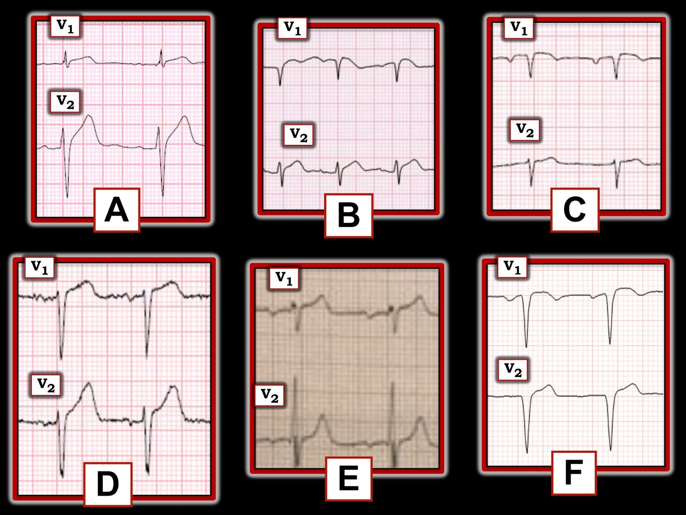
= = =
LƯU Ý: RẤT DỄ bị LVH đánh lừa!
- Có lẽ cách tốt nhất để làm quen với khái niệm “tính tương xứng” (proportionality) (về kích thước tương đối của độ lệch ST-T so với biên độ QRS ở chuyển đạo tương ứng) — là xem một loạt ví dụ, như các ca LVH giống xoáy trước tim trong phần bàn luận của BS. Smith ở trên.
- Tôi phân tích sâu thêm khái niệm này trong Bình luận của tôi — ở cuối trang của bài đăng ngày 6 tháng Hai năm 2020 trên Dr. Smith’s ECG Blog.
= = =
Hình ảnh xoáy trước tim ở chuyển đạo V6:
Phần cuối cùng trong chẩn đoán “xoáy trước tim” — là thấy ST chênh xuống soi gương ít nhất ở chuyển đạo V6 (có thể cả ở chuyển đạo V5):
- Một khi đã xác định bản ghi tôi đang xem không phải là LVH giống xoáy trước tim — tôi tập trung vào hình dạng của ST-T ở chuyển đạo V6.
- Tôi đã trình bày cách tiếp cận của mình đối với chẩn đoán bằng điện tâm đồ LVH nhiều lần trên blog của BS. Smith (Xem đặc biệt phần Bình luận của tôi ở cuối trang trong bài đăng ngày 20 tháng Sáu năm 2020). Trong Hình 2, tôi trích lại từ bài đăng ngày 20 tháng Sáu năm 2020 này sơ đồ minh họa hình dạng ST-T ở một hoặc nhiều chuyển đạo bên thể hiện “tăng gánh” thất trái.
ĐIỂM THEN CHỐT (PEARL): Nhìn chung — hình dạng ST-T chênh xuống ở chuyển đạo V6 trong “xoáy trước tim” không giống C hay D trong Hình 2. Thay vào đó — đoạn ST chênh xuống có xu hướng dẹt hơn. Vì vậy — hãy NGHĨ ĐẾN “xoáy trước tim” ở bệnh nhân có triệu chứng mới NẾU bạn thấy:
- Các dấu hiệu khác gợi ý OMI do tắc LAD cấp.
- ST-T ở chuyển đạo V1 trông “khác-với-dự-kiến”.
- Đoạn ST chênh xuống có hình dạng dẹt tương đối, ít nhất ở chuyển đạo V6 (có thể cả ở chuyển đạo V5).
= = =
Hình 2: Minh họa và mô tả “tăng gánh” thất trái (trích từ phần Bình luận của tôi trong bài đăng ngày 20 tháng Sáu năm 2020 trên Dr. Smith’s ECG Blog).

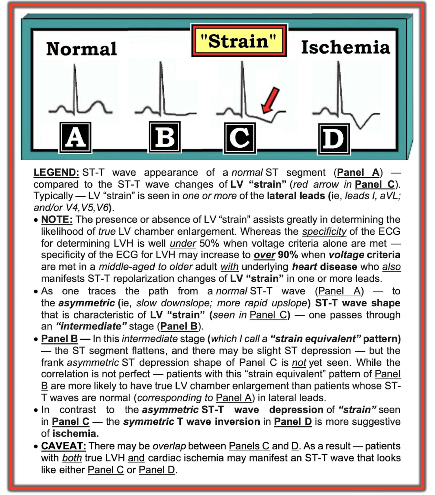
= = =
= = =